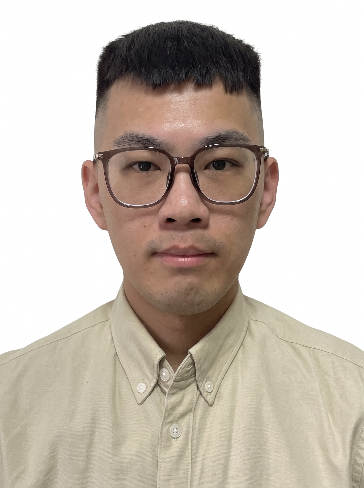

I'm Kevin, a Software Development Engineer in Test on the CoolWallet team at CoolBitX, with nearly 6 years of software testing experience (since 2020.09, first on the Sygna team and now on the CoolWallet team). I currently focus on API and app functional verification, help the team track and resolve product issues, define testing direction, and independently built an API integration testing project to improve testing efficiency. I also use AI to automatically generate app and API test verification documents, raising both testing efficiency and product delivery quality. Before that, on the Sygna team, I was mainly responsible for product function testing, system integration testing, regression testing configuration, and product performance testing, and I designed and implemented automated testing workflows.
During my bachelor's and master's studies, I focused on projects and research in physiological signals, spectral analysis, and IoT applications. After graduating, I turned that hands-on and research experience into an understanding of system behavior and quality, and have kept sharpening my testing and development skills. Going forward, I want to deepen my expertise in SDET work, test automation, and performance testing, while exploring how AI can be applied to testing workflows.
I'm Kevin, and I hold a master's degree from the Department of Electrical Engineering at National University of Tainan. I currently work as a software test engineer on the CoolWallet team at CoolBitX, responsible for API and app functional verification, tracking and resolving product issues, and defining testing direction. I also use AI to automatically generate app and API test verification documents, continuously improving testing efficiency and product delivery quality. Before that, I spent nearly six years on the Sygna team (2020.09 – 2026.05), responsible for product function testing, system integration testing, regression testing configuration, and product performance testing.
During my bachelor's and master's studies, I focused mainly on physiological signals, spectral analysis, and IoT applications. My undergraduate project, A Composite Leg Exercise System Controlled by Physiological Information, dynamically adjusted the exercise resistance model and motion angle based on EMG and body temperature signals. I designed the EMG and temperature signal detectors in C, implemented them on an Arduino UNO WiFi, and recorded users' physiological signals in a cloud database, adjusting exercise parameters in real time to improve training results.
My master's thesis, A Toxic Compound Detection System Combining Mobile Spectral Analysis and Fluorescent Proteins, combined Python spectral analysis with a smartphone camera to capture the reflectance spectra of food samples in real time. The data was sent through the IoTtalk platform to a backend server for toxic compound screening and spectral analysis, and linear regression was then used to determine the food's condition, letting users run tests anytime, anywhere.
I also worked as a contract staff member at the Office of Academic Affairs of National Cheng Kung University, handling administrative work and system support. During that time, I built an automation tool for the online document approval workflow with Python and Selenium, turning a manual approval process into an automated one and noticeably improving my colleagues' efficiency.
After joining the Sygna team at CoolBitX, I led or contributed to a number of testing projects:
After transferring to the CoolWallet team in May 2026, my focus shifted to API and app functional verification, while I continue to help the team track and resolve product issues and define testing direction. I developed an API integration testing project to improve overall testing efficiency, and use AI to automatically generate app and API test verification documents to track and improve product delivery quality.
Going forward, I hope to keep working at the intersection of software testing and development: strengthening my SDET skills, expanding my experience in test automation and performance testing, and exploring how AI can be brought into testing workflows, such as test case generation, anomaly detection, and result analysis, to help teams build more efficient and reliable products.